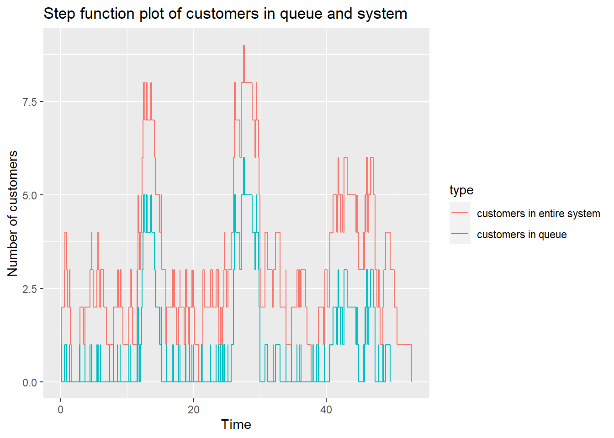

Chapter 9 Operational Research
9.1 Discrete Event Simulations
The example below is a based on examples provided in the simmer website.
## Loading required package: ggplot2## Warning: package 'ggplot2' was built under R version 4.0.5##
## Attaching package: 'simmer.plot'## The following objects are masked from 'package:simmer':
##
## get_mon_arrivals, get_mon_attributes, get_mon_resourcesNUM_ANGIO <- 1 # Number of machines for performing ECR
ECRTIME <- 1 # hours it takes to perform ECR~ 90/60
T_INTER <- 13 # new patient every ~365*24/700 hours
SIM_TIME <- 24*30 # Simulation time in 30 days
# setup
set.seed(42)
env <- simmer()
patient <- trajectory() %>%
log_("arrives at the ECR") %>%
seize("removeclot", 1) %>%
log_("enters the ECR") %>%
timeout(ECRTIME) %>%
set_attribute("clot_removed", function() sample(50:99, 1)) %>%
log_(function()
paste0(get_attribute(env, "clot_removed"), "% of clot was removed")) %>%
release("removeclot", 1) %>%
log_("leaves the ECR")
env %>%
add_resource("removeclot", NUM_ANGIO) %>%
# feed the trajectory with 4 initial patients
add_generator("patient_initial", patient, at(rep(0, 4))) %>%
# new patient approx. every T_INTER minutes
add_generator("patient", patient, function() sample((T_INTER-2):(T_INTER+2), 1)) %>%
# start the simulation
run(SIM_TIME)## 0: patient_initial0: arrives at the ECR
## 0: patient_initial0: enters the ECR
## 0: patient_initial1: arrives at the ECR
## 0: patient_initial2: arrives at the ECR
## 0: patient_initial3: arrives at the ECR
## 1: patient_initial0: 86% of clot was removed
## 1: patient_initial0: leaves the ECR
## 1: patient_initial1: enters the ECR
## 2: patient_initial1: 50% of clot was removed
## 2: patient_initial1: leaves the ECR
## 2: patient_initial2: enters the ECR
## 3: patient_initial2: 74% of clot was removed
## 3: patient_initial2: leaves the ECR
## 3: patient_initial3: enters the ECR
## 4: patient_initial3: 59% of clot was removed
## 4: patient_initial3: leaves the ECR
## 11: patient0: arrives at the ECR
## 11: patient0: enters the ECR
## 12: patient0: 67% of clot was removed
## 12: patient0: leaves the ECR
## 25: patient1: arrives at the ECR
## 25: patient1: enters the ECR
## 26: patient1: 98% of clot was removed
## 26: patient1: leaves the ECR
## 37: patient2: arrives at the ECR
## 37: patient2: enters the ECR
## 38: patient2: 74% of clot was removed
## 38: patient2: leaves the ECR
## 51: patient3: arrives at the ECR
## 51: patient3: enters the ECR
## 52: patient3: 95% of clot was removed
## 52: patient3: leaves the ECR
## 66: patient4: arrives at the ECR
## 66: patient4: enters the ECR
## 67: patient4: 75% of clot was removed
## 67: patient4: leaves the ECR
## 80: patient5: arrives at the ECR
## 80: patient5: enters the ECR
## 81: patient5: 96% of clot was removed
## 81: patient5: leaves the ECR
## 92: patient6: arrives at the ECR
## 92: patient6: enters the ECR
## 93: patient6: 90% of clot was removed
## 93: patient6: leaves the ECR
## 105: patient7: arrives at the ECR
## 105: patient7: enters the ECR
## 106: patient7: 76% of clot was removed
## 106: patient7: leaves the ECR
## 116: patient8: arrives at the ECR
## 116: patient8: enters the ECR
## 117: patient8: 86% of clot was removed
## 117: patient8: leaves the ECR
## 130: patient9: arrives at the ECR
## 130: patient9: enters the ECR
## 131: patient9: 54% of clot was removed
## 131: patient9: leaves the ECR
## 145: patient10: arrives at the ECR
## 145: patient10: enters the ECR
## 146: patient10: 83% of clot was removed
## 146: patient10: leaves the ECR
## 159: patient11: arrives at the ECR
## 159: patient11: enters the ECR
## 160: patient11: 89% of clot was removed
## 160: patient11: leaves the ECR
## 173: patient12: arrives at the ECR
## 173: patient12: enters the ECR
## 174: patient12: 82% of clot was removed
## 174: patient12: leaves the ECR
## 186: patient13: arrives at the ECR
## 186: patient13: enters the ECR
## 187: patient13: 73% of clot was removed
## 187: patient13: leaves the ECR
## 198: patient14: arrives at the ECR
## 198: patient14: enters the ECR
## 199: patient14: 64% of clot was removed
## 199: patient14: leaves the ECR
## 211: patient15: arrives at the ECR
## 211: patient15: enters the ECR
## 212: patient15: 57% of clot was removed
## 212: patient15: leaves the ECR
## 223: patient16: arrives at the ECR
## 223: patient16: enters the ECR
## 224: patient16: 53% of clot was removed
## 224: patient16: leaves the ECR
## 237: patient17: arrives at the ECR
## 237: patient17: enters the ECR
## 238: patient17: 94% of clot was removed
## 238: patient17: leaves the ECR
## 249: patient18: arrives at the ECR
## 249: patient18: enters the ECR
## 250: patient18: 54% of clot was removed
## 250: patient18: leaves the ECR
## 263: patient19: arrives at the ECR
## 263: patient19: enters the ECR
## 264: patient19: 83% of clot was removed
## 264: patient19: leaves the ECR
## 277: patient20: arrives at the ECR
## 277: patient20: enters the ECR
## 278: patient20: 84% of clot was removed
## 278: patient20: leaves the ECR
## 289: patient21: arrives at the ECR
## 289: patient21: enters the ECR
## 290: patient21: 75% of clot was removed
## 290: patient21: leaves the ECR
## 300: patient22: arrives at the ECR
## 300: patient22: enters the ECR
## 301: patient22: 55% of clot was removed
## 301: patient22: leaves the ECR
## 312: patient23: arrives at the ECR
## 312: patient23: enters the ECR
## 313: patient23: 52% of clot was removed
## 313: patient23: leaves the ECR
## 324: patient24: arrives at the ECR
## 324: patient24: enters the ECR
## 325: patient24: 51% of clot was removed
## 325: patient24: leaves the ECR
## 339: patient25: arrives at the ECR
## 339: patient25: enters the ECR
## 340: patient25: 59% of clot was removed
## 340: patient25: leaves the ECR
## 351: patient26: arrives at the ECR
## 351: patient26: enters the ECR
## 352: patient26: 82% of clot was removed
## 352: patient26: leaves the ECR
## 366: patient27: arrives at the ECR
## 366: patient27: enters the ECR
## 367: patient27: 88% of clot was removed
## 367: patient27: leaves the ECR
## 377: patient28: arrives at the ECR
## 377: patient28: enters the ECR
## 378: patient28: 94% of clot was removed
## 378: patient28: leaves the ECR
## 391: patient29: arrives at the ECR
## 391: patient29: enters the ECR
## 392: patient29: 58% of clot was removed
## 392: patient29: leaves the ECR
## 403: patient30: arrives at the ECR
## 403: patient30: enters the ECR
## 404: patient30: 61% of clot was removed
## 404: patient30: leaves the ECR
## 418: patient31: arrives at the ECR
## 418: patient31: enters the ECR
## 419: patient31: 58% of clot was removed
## 419: patient31: leaves the ECR
## 432: patient32: arrives at the ECR
## 432: patient32: enters the ECR
## 433: patient32: 84% of clot was removed
## 433: patient32: leaves the ECR
## 445: patient33: arrives at the ECR
## 445: patient33: enters the ECR
## 446: patient33: 65% of clot was removed
## 446: patient33: leaves the ECR
## 460: patient34: arrives at the ECR
## 460: patient34: enters the ECR
## 461: patient34: 77% of clot was removed
## 461: patient34: leaves the ECR
## 475: patient35: arrives at the ECR
## 475: patient35: enters the ECR
## 476: patient35: 77% of clot was removed
## 476: patient35: leaves the ECR
## 490: patient36: arrives at the ECR
## 490: patient36: enters the ECR
## 491: patient36: 67% of clot was removed
## 491: patient36: leaves the ECR
## 502: patient37: arrives at the ECR
## 502: patient37: enters the ECR
## 503: patient37: 67% of clot was removed
## 503: patient37: leaves the ECR
## 513: patient38: arrives at the ECR
## 513: patient38: enters the ECR
## 514: patient38: 95% of clot was removed
## 514: patient38: leaves the ECR
## 528: patient39: arrives at the ECR
## 528: patient39: enters the ECR
## 529: patient39: 85% of clot was removed
## 529: patient39: leaves the ECR
## 543: patient40: arrives at the ECR
## 543: patient40: enters the ECR
## 544: patient40: 85% of clot was removed
## 544: patient40: leaves the ECR
## 554: patient41: arrives at the ECR
## 554: patient41: enters the ECR
## 555: patient41: 67% of clot was removed
## 555: patient41: leaves the ECR
## 566: patient42: arrives at the ECR
## 566: patient42: enters the ECR
## 567: patient42: 62% of clot was removed
## 567: patient42: leaves the ECR
## 579: patient43: arrives at the ECR
## 579: patient43: enters the ECR
## 580: patient43: 68% of clot was removed
## 580: patient43: leaves the ECR
## 594: patient44: arrives at the ECR
## 594: patient44: enters the ECR
## 595: patient44: 78% of clot was removed
## 595: patient44: leaves the ECR
## 608: patient45: arrives at the ECR
## 608: patient45: enters the ECR
## 609: patient45: 93% of clot was removed
## 609: patient45: leaves the ECR
## 619: patient46: arrives at the ECR
## 619: patient46: enters the ECR
## 620: patient46: 70% of clot was removed
## 620: patient46: leaves the ECR
## 630: patient47: arrives at the ECR
## 630: patient47: enters the ECR
## 631: patient47: 97% of clot was removed
## 631: patient47: leaves the ECR
## 643: patient48: arrives at the ECR
## 643: patient48: enters the ECR
## 644: patient48: 87% of clot was removed
## 644: patient48: leaves the ECR
## 658: patient49: arrives at the ECR
## 658: patient49: enters the ECR
## 659: patient49: 62% of clot was removed
## 659: patient49: leaves the ECR
## 669: patient50: arrives at the ECR
## 669: patient50: enters the ECR
## 670: patient50: 58% of clot was removed
## 670: patient50: leaves the ECR
## 684: patient51: arrives at the ECR
## 684: patient51: enters the ECR
## 685: patient51: 92% of clot was removed
## 685: patient51: leaves the ECR
## 696: patient52: arrives at the ECR
## 696: patient52: enters the ECR
## 697: patient52: 91% of clot was removed
## 697: patient52: leaves the ECR
## 708: patient53: arrives at the ECR
## 708: patient53: enters the ECR
## 709: patient53: 78% of clot was removed
## 709: patient53: leaves the ECR
## 719: patient54: arrives at the ECR
## 719: patient54: enters the ECR## simmer environment: anonymous | now: 720 | next: 720
## { Monitor: in memory }
## { Resource: removeclot | monitored: TRUE | server status: 1(1) | queue status: 0(Inf) }
## { Source: patient_initial | monitored: 1 | n_generated: 4 }
## { Source: patient | monitored: 1 | n_generated: 56 }## Warning: Removed 12 row(s) containing missing values (geom_path).## [1] 9## [1] 2## [1] 2## Warning: 'plot.simmer' is deprecated.
## Use 'plot(get_mon_arrivals(x))' instead.
## See help("Deprecated")## `geom_smooth()` using method = 'loess' and formula 'y ~ x'9.2 Linear Programming
There are several different libraries useful for linear programming. The lpSolve library is used here as illustration.
library(lpSolve)
#solve using linear programming
n <-2.5 # Numbers of techs
set_up_eeg <- 40 # min
to_do_eeg <- 30 # min
clean_equipment <- 10 #min
annotate_eeg <- 10 #min
# put some error for EEG time
# if error=1 that mean NO errors happen
error <- 0.8 #change from 0.93
#Calculate time for EEG in hour
eeg_case_time <- ((set_up_eeg+to_do_eeg+clean_equipment+annotate_eeg)/60)*error
# limit for EEG per day
# we can put different limits for EEGs
limit_eeg <- round(8*eeg_case_time, digits = 0)
#s[i] - numbers of cases for each i-EEG's machines
#Setting the coefficients of s[i]-decision variables
#In a future can put some efficiency or some cost
objective.in=c(1,1,1,1,1)
#Constraint Matrix
const.mat=matrix(c(1,0,0,0,0,
0,1,0,0,0,
0,0,1,0,0,
0,0,0,1,0,
0,0,0,0,1,
1,1,1,1,1),nrow = 6,byrow = T)
#defining constraints
const_num_1=limit_eeg #in cases
const_num_2=limit_eeg #in cases
const_num_3=limit_eeg #in cases
const_num_4=limit_eeg #in cases
const_num_5=limit_eeg #in cases
const_res= n*7 # limit per sessions
#RHS for constraints
const.rhs=c(const_num_1,const_num_2,const_num_3,const_num_4,const_num_5, const_res)
#Direction for constraints
constr.dir <- rep("<=",6)
#Finding the optimum solution
opt=lp(direction = "max",objective.in,const.mat,constr.dir,const.rhs)
#summary(opt)
#Objective values of s[i]
opt$solution ## [1] 10.0 7.5 0.0 0.0 0.0#Estimate for day (Value of objective function at optimal point)
## [1] 17.5#Estimate EEG per month based on staff EFT- only 3.5 of 5.7
## [1] 3669.3 Plots
The median number of hours per fortnight is 127 + 8 (for urgent EEG) The median number of sessions is 36 + 4 for weekend
t=c(189.9370, 168.4725, 186.1128, 194.3047, 193.2593, 184.1915, 174.7920, 176.8964, 204.1324, 190.5459, 187.4211, 181.3592, 188.0941, 173.4730, 183.4212, 181.8803, 197.2092, 183.0857, 174.7203, 149.6084, 178.6238, 178.2982, 179.9899, 180.5452, 165.4464, 175.8635, 188.0470, 187.1038, 176.0725, 189.5796, 184.8708, 197.6775, 179.7429, 184.8719, 174.9163, 194.0854, 178.4370, 189.0127, 191.6685, 168.9936, 170.7558, 182.9075, 173.2931, 161.7117, 166.2627, 176.6619, 187.4424, 196.0481, 170.1041, 201.6837, 206.3890, 183.1897, 187.7450, 170.2805, 200.0915, 172.9868, 179.6910, 189.4723, 190.2622, 154.0683, 191.1630, 187.4863, 177.4675, 200.0806)
num_sessions=t/5
# Time spend on a report by neurologists (1 report = 30 min)
neurologists_h <- num_sessions*3.5
#print(neurologists_h)
# Histogram for Estimate Neurologists Time, hours per 2 weeks
hist(neurologists_h,
main="Estimate Neurologists Time, hours per 2 weeks",
xlab="Hours per 2 weeks",
col="magenta")
text(135, 15, paste0("Neurologist Hours=", " " , round(median(neurologists_h))))
9.4 Forecasting
Forecasting is useful in predicting trends. In health care it can be used for estimating seasonal trends and bed requirement. Below is a forecast of mortality from COVID-19 in 2020. This forecast is an example and is not meant to be used in practice as mortality from COVID depends on the number of factors including infected cases, age, socioeconomic group, and comorbidity.
## -- Attaching packages --------------------------------------- tidyverse 1.3.0 --## v tibble 3.1.6 v dplyr 1.0.8
## v tidyr 1.1.4 v stringr 1.4.0
## v readr 1.4.0 v forcats 0.5.0
## v purrr 0.3.4## Warning: package 'tibble' was built under R version 4.0.5## Warning: package 'tidyr' was built under R version 4.0.5## Warning: package 'dplyr' was built under R version 4.0.5## -- Conflicts ------------------------------------------ tidyverse_conflicts() --
## x dplyr::filter() masks stats::filter()
## x dplyr::lag() masks stats::lag()
## x dplyr::select() masks simmer::select()
## x tidyr::separate() masks simmer::separate()## Loading required package: Rcpp## Warning: package 'Rcpp' was built under R version 4.0.5## Loading required package: rlang## Warning: package 'rlang' was built under R version 4.0.5##
## Attaching package: 'rlang'## The following objects are masked from 'package:purrr':
##
## %@%, as_function, flatten, flatten_chr, flatten_dbl, flatten_int,
## flatten_lgl, flatten_raw, invoke, splice## NOTE: Either Arial Narrow or Roboto Condensed fonts are required to use these themes.## Please use hrbrthemes::import_roboto_condensed() to install Roboto Condensed and## if Arial Narrow is not on your system, please see https://bit.ly/arialnarrow##
## Attaching package: 'lubridate'## The following objects are masked from 'package:simmer':
##
## now, rollback## The following objects are masked from 'package:base':
##
## date, intersect, setdiff, unionlibrary(readr) #use read_csv to read csv rather than base R
covid<-read_csv("./Data-Use/Covid_Table100420.csv") ## Warning: Missing column names filled in: 'X1' [1]## Warning: Duplicated column names deduplicated: 'COVID-19 Deaths' => 'COVID-19
## Deaths_1' [6], 'Pneumonia Deaths*' => 'Pneumonia Deaths*_1' [8], 'Influenza
## Deaths' => 'Influenza Deaths_1' [10]##
## -- Column specification --------------------------------------------------------
## cols(
## X1 = col_double(),
## Year = col_double(),
## Week = col_double(),
## `Total Deaths` = col_number(),
## `COVID-19 Deaths` = col_number(),
## `COVID-19 Deaths_1` = col_double(),
## `Pneumonia Deaths*` = col_number(),
## `Pneumonia Deaths*_1` = col_double(),
## `Influenza Deaths` = col_double(),
## `Influenza Deaths_1` = col_double(),
## Total.Deaths = col_double(),
## Date = col_date(format = "")
## )## [1] "X1" "Year" "Week"
## [4] "Total Deaths" "COVID-19 Deaths" "COVID-19 Deaths_1"
## [7] "Pneumonia Deaths*" "Pneumonia Deaths*_1" "Influenza Deaths"
## [10] "Influenza Deaths_1" "Total.Deaths" "Date"# A data frame with columns ds & y (datetimes & metrics)
covid<-rename(covid, ds =Date, y=Total.Deaths)
covid2 <- covid[c(1:12),]
m<-prophet(covid2)#create prophet object## Disabling yearly seasonality. Run prophet with yearly.seasonality=TRUE to override this.## Disabling weekly seasonality. Run prophet with weekly.seasonality=TRUE to override this.## Disabling daily seasonality. Run prophet with daily.seasonality=TRUE to override this.## n.changepoints greater than number of observations. Using 8# Extend dataframe 12 weeks into the future
future <- make_future_dataframe(m, freq="week" , periods = 26)
# Generate forecast for next 500 days
forecast <- predict(m, future)
# What's the forecast for July 2020?
forecasted_rides <- forecast %>%
arrange(desc(ds)) %>%
dplyr::slice(1) %>%
pull(yhat) %>%
round()
forecasted_rides## [1] 67488# Visualize
forecast_p <- plot(m, forecast) +
labs(x = "",
y = "mortality",
title = "Projected COVID-19 world mortality",
subtitle = "based on data truncated in January 2020") +
ylim(20000,80000)+
theme_ipsum_rc()
#forecast_p9.4.1 Bed requirement
9.4.2 Length of stay
9.4.3 Customer churns
Customer churns or turnover is an issue of interest in marketing. The corollary within healthcare are patients attendance at outpatient clinics, Insurance. The classical method used is GLM.
9.5 Process mapping
library(DiagrammeR)
a.plot<-mermaid("
graph TB
A((Triage))
A-->|2.3 hr|B(Imaging-No Stroke Code)
A-->|0.6 hr|B1(Imaging-Stroke Code)
B-->|14.6 hr|B2(Dysphagia Screen)
B1-->|no TPA 10.7 hr|B2(Dysphagia Screen)
C(Stop NBM)
B2-->|0 hr|C
C-->|Oral route 1.7 hr|E{Antithrombotics}
D1-->|7.5 hr|E
B-->|PR route 6.8 hr|E
B1-->|PR route 3.8 hr|E
B1-->|TPA 24.7 hr|D1(Post TPA Scan)
style A fill:#ADF, stroke:#333, stroke-width:2px
style B fill:#9AA, stroke:#333, stroke-width:2px
style B2 fill:#9AA, stroke:#333, stroke-width:2px
style B1 fill:#879, stroke:#333, stroke-width:2px
style C fill:#9AA, stroke:#333, stroke-width:2px
style D1 fill:#879, stroke:#333, stroke-width:2px
style E fill:#9C2, stroke:#9C2, stroke-width:2px
")
a.plot##
## Attaching package: 'bupaR'## The following object is masked from 'package:simmer':
##
## select## The following object is masked from 'package:stats':
##
## filter## The following object is masked from 'package:utils':
##
## timestamp9.6 Supply chains
9.7 Health economics
9.7.1 Cost
##
## Attaching package: 'hesim'## The following object is masked from 'package:tidyr':
##
## expand##
## Attaching package: 'data.table'## The following objects are masked from 'package:lubridate':
##
## hour, isoweek, mday, minute, month, quarter, second, wday, week,
## yday, year## The following object is masked from 'package:rlang':
##
## :=## The following objects are masked from 'package:dplyr':
##
## between, first, last## The following object is masked from 'package:purrr':
##
## transposestrategies <- data.table(strategy_id = c(1, 2))
n_patients <- 1000
patients <- data.table(patient_id = 1:n_patients,
age = rnorm(n_patients, mean = 70, sd = 10),
female = rbinom(n_patients, size = 1, prob = .4))
states <- data.table(state_id = c(1, 2),
state_name = c("Healthy", "Sick"))
# Non-death health states
tmat <- rbind(c(NA, 1, 2),
c(3, NA, 4),
c(NA, NA, NA))
colnames(tmat) <- rownames(tmat) <- c("Healthy", "Sick", "Dead")
transitions <- create_trans_dt(tmat)
transitions[, trans := factor(transition_id)]
hesim_dat <- hesim_data(strategies = strategies,
patients = patients,
states = states,
transitions = transitions)
print(hesim_dat)## $strategies
## strategy_id
## 1: 1
## 2: 2
##
## $patients
## patient_id age female
## 1: 1 74.49568 1
## 2: 2 81.28151 0
## 3: 3 75.77658 1
## 4: 4 85.22760 0
## 5: 5 75.53833 0
## ---
## 996: 996 69.13292 0
## 997: 997 79.88596 0
## 998: 998 70.27419 1
## 999: 999 46.92223 0
## 1000: 1000 77.25573 1
##
## $states
## state_id state_name
## 1: 1 Healthy
## 2: 2 Sick
##
## $transitions
## transition_id from to from_name to_name trans
## 1: 1 1 2 Healthy Sick 1
## 2: 2 1 3 Healthy Dead 2
## 3: 3 2 1 Sick Healthy 3
## 4: 4 2 3 Sick Dead 4
##
## attr(,"class")
## [1] "hesim_data"Data from WHO on mortality rate can be extracted directly from WHO or by calling get_who_mr in heemod library.
## Registered S3 method overwritten by 'pryr':
## method from
## print.bytes Rcpp##
## Attaching package: 'heemod'## The following object is masked from 'package:purrr':
##
## modify## The following object is masked from 'package:simmer':
##
## joinThere are several data in BCEA library.
library(BCEA)
#use Vaccine data from BCEA
data(Vaccine,package = "BCEA")
ints=c("Standard care","Vaccination")
m <- bcea(e,c,ref=2,interventions=ints)
summary(m)##
## Cost-effectiveness analysis summary
##
## Reference intervention: Vaccination
## Comparator intervention: Standard care
##
## Optimal decision: choose Standard care for k<20100 and Vaccination for k>=20100
##
##
## Analysis for willingness to pay parameter k = 25000
##
## Expected utility
## Standard care -36.054
## Vaccination -34.826
##
## EIB CEAC ICER
## Vaccination vs Standard care 1.2284 0.529 20098
##
## Optimal intervention (max expected utility) for k=25000: Vaccination
##
## EVPI 2.4145